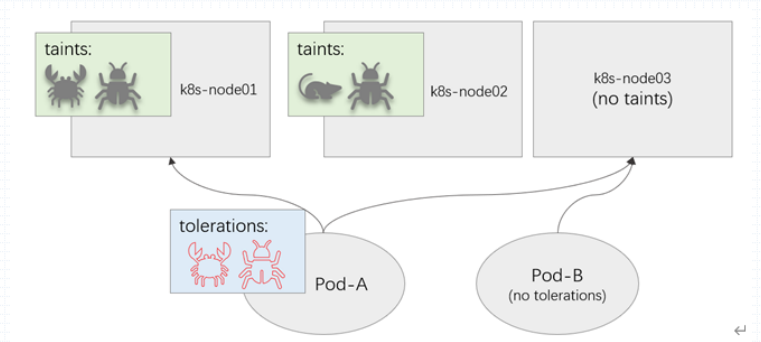

k8s高级调度-节点污点和Pod容忍度
无论是节点选择器，节点亲和或pod亲和都是让pod来选择节点的，节点只能被动等待。
而节点污点和Pod容忍度，则是用来让节点拒绝被调度，除非pod能够容忍节点上所拥有的污点。
污点是节点级的属性，我们可以在节点上设定一组特殊的影响调度的属性，这种属性叫做污点。
一旦节点上有污点，pod将无法调度到此节点之上。除非他能容忍这些污点。如果一个pod容忍了这些污点，从而使的pod被调度到此节点上，此节点还能再次修改容忍度，使的被调度到该节点上的pod的容忍度无法被满足从而起到驱离pod的效果。
这些效果需要在节点上添加一个效用标识（effect）来达成。
污点和容忍度关系

对于Pod-A来说能够容忍有螃蟹和小强标记的污点，那么其能够调度到node01和node03之上
对于Pod-B来说，其没有容忍度，那么其只能调度到node03上。
k8s主节点上的污点
k8s的主节点在部署完毕后就自动带有污点：
1 | root@k8s-master01:~# kubectl describe node k8s-master01 | grep Taints |
这么做是为防止应用容器被调度到主机点之上，因为在主节点之上存在API Server、ControllerManager、kube-Scheduler，本身master节点上的系统压力就比较大。如果将应用pod调度到节点之上会导致主节点会不堪重负。
效用标识
效用标识主要由以下3种类型：
- NoSchedule：不能容忍此污点的Pod对象不可调度至当前节点，属于强制型约束关系，但添加污点对节点上现存的Pod对象不产生影响。
- PreferNoSchedule：NoSchedule的柔性约束版本，即调度器尽量确保不会将那些不能容忍此污点的Pod对象调度至当前节点，除非不存在其他任何能够容忍此污点的节点可用；添加该类效用的污点同样对节点上现存的Pod对象不产生影响。
- NoExecute：不能容忍此污点的新Pod对象不可调度至当前节点，属于强制型约束关系，而且节点上现存的Pod对象因节点污点变动或Pod容忍度变动而不再满足匹配条件时，Pod对象将会被驱逐。
效用标识匹配
在Pod对象上定义容忍度时，它支持两种操作符，一种是等值比较，表示容忍度与污点必须在key、value和effect三者之上完全匹配，另一种是存在性判断（Exists），表示二者的key和effect必须完全匹配，而容忍度中的value字段要使用空值。
一个节点可以配置使用多个污点，而一个Pod对象也可以有多个容忍度，将一个Pod对象的容忍度套用到特定节点的污点之上进行匹配度检测时，时将遵循如下逻辑：
- 首先处理每个有着与之匹配的容忍度的污点；
- 对于不能匹配到容忍度的所有污点，若存在一个污点使用了NoSchedule或NoExecute效用标识，则拒绝调度当前Pod至该节点；
- 对于不能匹配到容忍度的所有污点，若都不具有NoSchedule效用标识，但至少有一个污点使用了PreferNoScheduler效用标准，则调度器会尽量避免将当前Pod对象调度至该节点。
- 如果至少有一个不能匹配容忍度的污点使用了NoExecute效用标识，节点将立即驱逐当前Pod对象，或者不允许该Pod调度至给定的节点；而且，即便容忍度可以匹配到使用了NoExecute效用标识的污点，若在Pod上定义容忍度时同时使用tolerationSeconds属性定义了容忍时限，则在超出时限后当前脚Pod也将会被节点所驱逐。
Pod容忍度资源配置
pod容忍度配置规范如下
1 | spec: |
pod容忍度示例
1.编辑资源清单
1 | root@k8s-master01:~/yaml/chapter11# vim daemonset-demo.yaml |
2.应用配置清单
1 | root@k8s-master01:~/yaml/chapter11# kubectl apply -f daemonset-demo.yaml |
3.查看pod调度情况
1 | root@k8s-master01:~/yaml/chapter11# kubectl get pods -o wide |
节点标记污点
节点标记污点只需使用kubctl taint即可
1 | # 详细方法使用help查询 |
污点标记示例
给node03添加污点
1 | root@k8s-master01:~/yaml/chapter11# kubectl taint node k8s-node03 diskfull=true:NoExecute |
查看node03详细信息
1 | root@k8s-master01:~/yaml/chapter11# kubectl describe node k8s-node03 | grep "Taints" |
查看pod信息
1 | root@k8s-master01:~/yaml/chapter11# kubectl get pods -o wide |